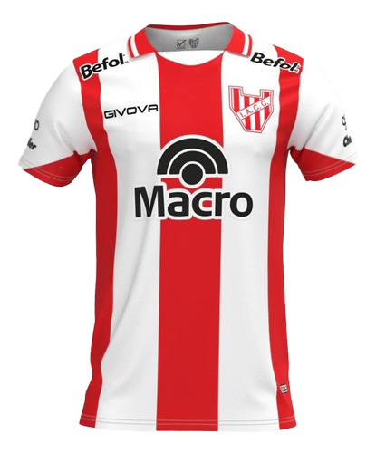
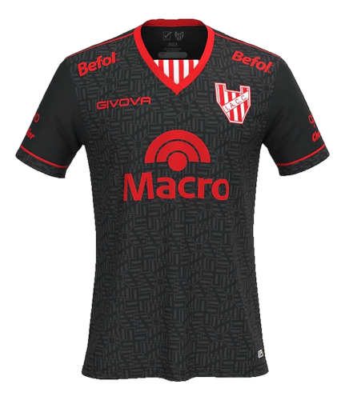

🔴⚪ Gloria se viste de historia, orgullo y pasión
La camiseta titular 2025 del Instituto Atlético Central Córdoba no es solo una prenda deportiva:
es una pieza cargada de significado. Esta nueva edición se presenta como un homenaje visual
y emocional a una de las etapas más gloriosas del club,
en la que el espíritu de lucha, la identidad barrial y el amor incondicional de su hinchada marcaron un antes y un después.
💡 La idea detrás del diseño
Desde el primer boceto, la intención fue clara: diseñar una camiseta que represente la esencia de Instituto.
Se buscó una estética que respete el legado del club, pero también que dialogue con el presente.
El resultado es una camiseta con franjas verticales rojas y blancas, renovadas con cortes limpios y un cuello estilizado.
La tela liviana y de alto rendimiento acompaña al jugador y al hincha. Porque esta camiseta no solo se juega: se vive.
🔁 Inspiración:
una página inolvidable de la historia gloriosa
una página inolvidable de la historia gloriosa.
El modelo 2025 de la camiseta se inspira en la usada en 1999,
el año en que Instituto ascendió a la Primera División tras ganar el Torneo de la B Nacional.
Esa camiseta, con sus franjas y el espíritu de lucha, quedó en la memoria de una generación.
Hoy, este símbolo celebra a los héroes de ese año y su legado,
reafirmando que la historia se honra y cada camiseta es una bandera para futuras batallas.
❤️ Una remera, un símbolo
Vestir la camiseta titular 2025 es abrazar el pasado, vivir el presente y soñar el futuro.
Es ser parte de algo más grande.
Es ser Instituto.

🔴⚪ Camiseta Suplente Instituto 2025
La Gloria se reinventa con elegancia, memoria y carácter.
La camiseta suplente 2025 del Instituto Atlético Central Córdoba no es simplemente una alternativa:
es una declaración de estilo y pertenencia. Esta nueva versión rinde homenaje a la historia del club desde una mirada distinta,
combinando innovación, identidad y un respeto profundo por la pasión que une a jugadores e hinchas.
💡 La inspiración detrás del diseño
Desafío claro desde el comienzo: crear una camiseta que complemente a la titular, pero que tenga su propio peso simbólico y estético.
Así nació esta prenda, pensada para destacar por su sobriedad, pero también para emocionar.
Los colores, fueron seleccionados para representar la fuerza, la templanza y la elegancia que también forman parte del ADN albirrojo.
El cuello renovado, los cortes precisos y la tecnología aplicada en la tela convierten esta camiseta en un símbolo de evolución.
Porque no se trata solo de un uniforme: es una forma de decir que Instituto está preparado para cada escenario, en casa o fuera de ella.
🔁 Memoria que impulsa
La suplente 2025, aunque diferente, toma elementos del pasado del club. Busca testimoniar nuevos logros.
Evoca partidos inolvidables donde Instituto mostró su grandeza sin fronteras.
No es un cambio, es una expansión de identidad.
Es una forma de llevar los colores de otra manera, sin dejar de ser quienes somos.
❤️ Una remera, un legado
Vestir la camiseta suplente 2025 es llevar la historia al futuro.
Es saber que no importa el color: lo que corre por dentro es siempre rojo y blanco.
Es creer, luchar y sentir.
Es ser Instituto.
.png)